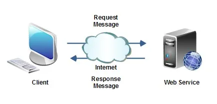
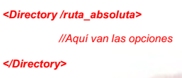
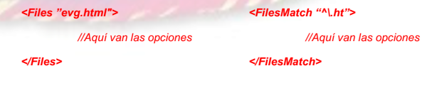
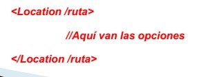

Protocolo http/https
Nos consta de dos partes: El Cliente Web y el Servidor Web:

El Cliente:
- -Solicita e interpreta el contenido.
- -Renderiza en la pantalla el resultado.
- -Interactúa con el usuario.
El Servidor:
- -Sirve contendio estático.
- -Ejecuta programas para generar contenido dinámico (PHP).
- -Autentica usuarios.
- -Certificados SSL/TLS.
- -Mediante extensiones genera contenido dinámico (JavaScrip, Ajax).
El navegador - Cliente Web
-Utilizando el protocolo HTTP descarga los documentos en los diferentes
formatos de la web (HTML, CSS, Javascript) así como los recursos asociados
-Puede negociar algunas características particulares. Por ejemplo, si se
soporta compresión o no.
-Interpreta la información en los documentos y renderiza el documento.
-Permite recoger información del usuario y enviarla al servidor como parámetros
en una petición web GET o POST.
-Gestiona las cookies que han sido enviadas por los servidores.
El Servidor Web
- El servidor web, soporta el protocolo HTTP / HTTPS. Atiende a las peticiones del cliente. Autenticación de Usuarios. SSL/ TLS De forma nativa, o mediante módulos, permite ejecutar aplicaciones de diferentes formas CGI : Common Gateway Interface PHP Python Java Puede haber módulos que permitan de forma transparente alterar el contenido para optimizarlo o con otros fines. HTML, Javascript, AJAX
Protocolo http
Orientado a petición / respuesta (Request / Response)
-Soporta los métodos : GET, POST, HEAD, PUT, DELETE, CONNECT,
OPTIONS, TRACE, PATCH
-Las peticiones y respuestas transportan información adicional en los
encabezados HTTP.
-Cada petición retorna un código de estado. El mensaje suele ser
personalizable.
-Cada petición podría ir en una conexión independiente pero actualmente se
suele utilizar una única conexión para varias peticiones a no ser que se indique
lo contrario. Esto ahorra recursos del servidor.
-Las cookies son un mecanismo para la gestión de estado en el protocolo
HTTP (RFC2109)

Servicios Web – Protocolo DNS
Protocolo DNS
-DNS (Domain Name System) protocolo capa aplicación:
-Su función es resolver nombres (dominios) legibles para las personas en identificadores binarios (direcciones IP) legibles para las máquinas
-El servidor DNS utiliza una base de datos distribuida y jerárquica que almacena información asociada a nombres de dominio.
-Utiliza el puerto UDP 53.
-.org → dominio de nivel superior (TLD)
-daw → subdominio, dominio de segundo nivel.
-deap → subdominio, dominio de tercer nivel.
-es.deap.daw.org → hostname, nodo de nombre completo (FQDN)
Más información sobre formato de nombres de host y otros datos.
Protocolo DNS
-Normalmente se utiliza servidores DNS de los ISPs.
-Funcionamiento:
-Los servidores DNS que reciben la petición, buscan en primer lugar si disponen de la respuesta en la memoria caché.
-Si lo encuentran, sirven la respuesta.
-En caso contrario, inician la búsqueda en otros DNS.
-Una vez encontrada la respuesta, el servidor DNS guardará el resultado en su memoria caché para futuros usos y devuelve el resultado.
-Reenviadores: consultas a nombres DNS externos a servidores DNS normalmente fuera de la red.
Servidor DNS
-La resolución directa, permite traducir un nombre a una dirección IP -La resolución inversa, mediante la definición de registros PTR permite obtener el nombre que corresponde con una dirección IP. Se basa en el dominio in- addr.arpa. Se van añadiendo los diferentes números en la IP en sentido inverso.
El campo TTL
-TTL --> Time To Live.
-Define el tiempo que debe vivir ese registro en las memorias caché de los
servidores antes de que se vuelvan a solicitar.
-Todos los registros de la caché DNS tienen este campo.
-Guarda una relación directa con el tiempo que tardan en propagarse los
cambios.
Servidor Web Apache
Características y Ventajas Apache
- -Servidor web HTTP de código abierto.
- -Se desarrolla dentro del proyecto HTTP Server (httpd) de la Apache Software Fundation
- -Implementa el protocolo HTTP/1.1.
- -Modular.
- -Multi-plataforma (Windows, Linux, MacOS).
- -Muy estable.
- -Tradicionalmente solución más popular (soporte).
Arquitectura Servidor Web Apche

Instalación Servidor Apache
Gestión del Servicio Apache
service apache2 [start|stop|restart|reload|status]
- start → Iniciar el servicio Apache2.
- stop → Parar el servicio Apache2.
- restart → Reiniciar el servicio Apache2.
- reload → Reiniciar el servicio Apache2 sin matar las conexiones activas.
- status → Mostrar el estado del servicio Apache2.
Estructura del Servidor Web Apache
- Contenido: Aplicaciones web del servidor Apache en
/var/www- Ruta virtual host / site por defecto:
/var/www/html
- Ruta virtual host / site por defecto:
- Configuración: Del servidor web Apache en
/etc/apache2- Módulos del servidor web.
- Ficheros de configuración (Apache, Virtual Host).
- Registro de ficheros de actividad: (Servidor, Virtual Host):
/var/log/apache2
Estructura / Tipo de Directorios
- Directorio de Contenidos:
- /var/www → Ruta por defecto para alojamiento web (htdocs).
- /var/www/midominio → Ruta para los host virtuales.
- /var/www/html → Ruta del virtual host / site por defecto de Apache.
- Directorios de Configuración:
- /etc/apache2 → Directorio por defecto de los archivos de configuración.
- /etc/apache2/apache2.conf → Configuración principal global de Apache.
- /etc/apache2/ports.conf → Puertos por los que Apache escucha (por defecto, 80 y 443 si SSL está habilitado).
- /etc/apache2/sites-available → Archivos de configuración de los Virtual Hosts. No son usados si no están vinculados a
sites-enabled. - /etc/apache2/sites-enabled → Virtual Hosts habilitados por el servidor web.
- /etc/apache2/conf-available y /etc/apache2/conf-enabled → Archivos de configuración que no pertenecen a ningún Virtual Host.
- /etc/apache2/mods-available y /etc/apache2/mods-enabled → Contienen los módulos disponibles y habilitados para su uso.
- Archivos
*.load→ Archivos de carga específicos de algún módulo. - Archivos
*.conf→ Archivos de configuración de estos módulos.
Archivos de Log
- /var/log/apache2/access.log → Log que registra todas las peticiones hechas al servidor web.
- /var/log/apache2/error.log → Log que registra todos los errores producidos en el servidor web.
Directivas Básicas
Ubicación: /etc/apache2/apache2.conf
-Contiene la configuración y directivas globales del servidor web Apache.
-Aplicará a todas las webs del servidor, siempre y cuando esta directiva no se repita en contextos inferiores (Virtual Host).
Variables de Entorno Servidor Apache2: /etc/apache2/envvars
-Archivo Variables de Entorno
-Ubicado en /etc/apache2/envvars
-Valores recogidos para su uso centralizado del servidor Apache2
-Ejemplo de Variables de Entorno:
-APACHE_RUN_USER
-APACHE_RUN_GROUP
-APACHE_RUN_DIR
-APACHE_LOCK_DIR
-APACHE_PID_FILE
-APACHE_LOG_DIR
DIRECTIVAS BÁSICAS
-ServerName
-ServerRoot
-ServerAdmin
-DocumentRoot
-PidFile
-User
-Group
-ErrorLog
-Listen
-DirectoryIndex
-TypesConfig
-DefaultType
# Comentarios en los ficheros de configuración Apache
ServerName: indica el nombre con el que el servidor se conoce a sí mismo. Resolución por DNS.
ServerName daw27.deap27.net
ServerRoot: indica el directorio en el que se encuentran los ficheros de configuración de Apache.
ServerRoot /etc/apache2
ServerAdmin: indica el correo electrónico del administrador del servicio en los mensajes de error del servidor.
ServerAdmin admin@daw27.deap27.net
DocumentRoot: indica el directorio en el que se encuentran los ficheros que Apache servirá a los clientes (páginas HTML, scripts PHP, CGIs, etc.).
DocumentRoot /var/www/html
PidFile: indica el fichero en el que se guardará el ID del proceso de Apache. Este fichero es el que se lee cuando hay que parar/matar el proceso.
PidFile /var/run/apache2/apache2.pid
User: indica el usuario con el que se ejecutará Apache. Por defecto:
User www-data
Group: indica el grupo con el que se ejecutará Apache. Por defecto:
Group www-data
ErrorLog: establece el fichero de log de errores de Apache (fallos de acceso, intentos de acceso a recursos sin autorización, páginas no encontradas, etc.).
ErrorLog /var/log/apache2/errorlog.log
Listen: indica la dirección IP y el puerto en el que escuchará Apache. Por defecto escuchará en todas las direcciones IP.
Listen 80
Listen 10.3.11.227:80
DirectoryIndex: establece los nombres de ficheros que servirán como índices al acceder a un directorio sin indicar ningún recurso concreto.
DirectoryIndex index.html index.php
TypesConfig: indica el fichero con la lista de tipos Mime. Los tipos Mime constituyen un estándar que relaciona tipos de ficheros con sus extensiones y le permiten a Apache informar al navegador del tipo de fichero que le está entregando. Así, el navegador decide cómo presentarlo (mostrando una página web, ejecutando un plugin, guardándolo en disco...).
TypesConfig /etc/mime.types
DefaultType: indica el tipo Mime por defecto para aquellos ficheros cuya extensión no figure en la lista de tipos Mime.
DefaultType text/plain
Directivas de Bloque
-Directory: las directivas que se incluyan dentro de Directory sólo se aplican a ese directorio, los subdirectorios y los contenidos. Debe indicarse con la ruta absoluta. Módulo asociado: core

-Files: Las directivas que incluya el bloque Files únicamente se aplican a los ficheros indicados. Módulo asociado: core

-Location: Las directivas del bloque Location se aplican únicamente en el ámbito de la URL indicada en la etiqueta y solicitada por el cliente, y puede ser totalmente distinto al path del directorio. Las opciones especificadas en las directivas <Location> son procesadas después de las opciones especificadas en los bloques <Directory> y pueden sobrescribir cualquier opción establecida en estos bloques, haciéndola nula. Módulo asociado: core
-NO controlar accesos al directorio, si no al contenido.
-SetHandler, muy utilizado conjuntamente.
-Se utiliza ruta absoluta.

SetHandler
-Indica el “manejador” que se utilizará para atender la peticiones a un directorio, a un tipo de ficheros o a una localización.
-Módulo asociado: core
Cargados por defecto servidor:
▪ default-handler: es el handler usado por defecto para tratar contenido estático. (core)
▪ send-as-is: envía el fichero con cabeceras HTTP tal y como es. (mod_asis)
▪ cgi-script: trata el fichero como un script CGI. (mod_cgi)
▪ imap-file: Trata el fichero como un mapa de imágenes. (mod_imap)
▪ server-info: extrae la información de configuración del servidor. (mod_info)
▪ server-status: Extrae el informe de estado del servidor. (mod_status)
▪ type-map: Trata el fichero como una correspondencia de tipos para la negociación de contenidos.
DIRECTIVA DIRECTORY
<Directory /ruta_absoluta>
Options [None, All, Indexes, FollowSymLinks,....]
AllowOverride [None, All, directive_type]
Order [allow, deny]
Allow/Deny from [all, IP, dominio, subred...]
Require [host, ip, valid-user, all granted, all denied...]
..................
</Directory>
OPTIONS
La directiva Options controla características del servidor que están disponibles en un directorio. Valores:
-None: ninguna funcionalidad adicional.
-All: todas las opciones activadas (menos Multiviews). Opción por defecto.
-FollowSymLinks: permite seguir los enlaces simbólicos de un directorio.
-Indexes: si se produce una petición a una URL que se corresponde con un directorio, y no hay DirectoryIndex, muestra el contenido del directorio.
-Includes: permite el uso de Server-Side Includes (SSI), del módulo mod_include, añadir contenido generado de manera dinámica a las páginas HTML existentes sin tener que servir una página entera a través de un programa CGI u otras tecnologías.
Ej:
-Multiviews: permite gestionar múltiples vistas y presentar seleccionando las características más apropiadas al cliente de la solicitud (mod_negotiation). Ficheros (*.var)
-Content-Encoding
-Content-Language
-Content-Length
-Content-Type
-Otros.....
AllowOverride
Especifica si el servidor tiene en cuenta las directivas de los ficheros .htaccess en detrimento de las directivas previas encontradas. Del mismo modo puede especificar qué grupo de directivas se puede manejar (directive_type).
Módulo asociado: core
Sólo se utiliza en las directivas Directory.
-None: los ficheros .htaccess son ignorados completamente. (OPCIÓN POR DEFECTO)
-All: cualquier directiva que tenga Context .htaccess puede ser usada en los ficheros .htaccess.
AllowOverride directive_type
-AuthConfig: Permite usar directivas de autenticación (ej: AuthType)
-FileInfo: Permite usar directivas que controlan los tipos de documento (ej: ErrorDocument)
-Indexes: Permite el uso de directivas que controlan el indexado de directorios (ej: DirectoryIndex)
-Limit: Permite el uso de directivas que controlan el acceso al host (ej: Allow)
-Options: Permite usar directivas que controlan funcionalidades específicas de directorios (ej: Options)
Order
Define el orden con que el servidor tiene en cuenta las restricciones de las directivas allow o deny posteriores, dentro del contexto (directory, .htaccess).
Módulo asociado: mod_access_compat
Order allow, deny
Order deny, allow
Allow / Deny
Permite o deniega el acceso al contexto al que hace referencia (directory, .htaccess)
Módulo asociado: mod_access_compat
-Allow/Deny from all: permite o deniega todo el acceso.
-Otros argumentos:
-Dominio / Subdominio.
-Direcciones IP / Rango de IPs
-Direcciones parciales IP
-Subred
Require
Permite o deniega el acceso al contexto al que hace referencia (directory, .htaccess) en base a unos criterios.
Módulos asociados: mod_authz_core mod_authz_user mod_authz_host mod_authz_groupfile
-Require all granted/denied permite o deniega de manera incondicional.
-Require user [userid] permite el acceso solo a los usuarios nombrados.
-Require group [group-name] permite el acceso solo a los usuarios que pertenecen al grupo referenciado.
-Require valid-user todos los usuarios válidos.
-Require ip [direcciónip] permite el acceso solo a la ip nombrada
Orden lectura Runtime - Apache
-Los bloques <Directory> se leen primero.
-Los archivos .htaccess se leen al mismo tiempo que los bloques <Directory>, pero pueden sobrescribir o anular las opciones especificadas en los bloques <Directory> si esto es permitido a través de la opción AllowOverride.
-A continuación se leen las directivas <Files>.
-Finalmente, se leen las directivas <Location>.